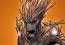

Get a hero!
Get a hero! is a non profit project that aims to bring heroes closer to people by spreading their biographys, powers and abilities. Take a seat and enjoy the readings.
Check our hero list
|  | Hailing from the Branch Worlds’ Planet X, Groot is part of a species called Groot, so his name is also the title of his taxonomic classification. From the time he was a sapling, Groot was destined to protect the rights of the downtrodden. He campaigned for the Undergrowth, anthropomorphic animals and fungi who helped maintain Planet X’s ecosystem by performing menial tasks. Groot’s noble campaign drew the rancor of the other Groots and he ended up leaving his home world. |
 |
Tony Stark is the wealthy son of industrialist and weapons manufacturer Howard Stark and his wife, Maria. Tony grew up a genius with a brilliant mind for technology and inventions and, naturally, followed in his father’s footsteps, inheriting Stark Industries upon his parents’ untimely death. Tony designed many weapons of war for Stark Industries, far beyond what any other company was creating, while living the lifestyle of an irresponsible playboy. |
| A good man with a criminal past, Scott Lang builds upon the legacy of one of the founding Avengers as the size-changing hero Ant-Man. Desperate to provide for his family, but unable to make ends meet, electronics genius Scott Lang turned to burglary and inadvertently won himself a prison sentence. After being released early for good behavior, he knuckled down to raise his daughter Cassie, though soon discovered nothing had changed with his luck and fortunes. When Cassie fell ill from a devastating heart ailment and her surgeon was abducted by a mysterious wealthy man, Lang reluctantly returned to his life of crime in an effort to save his daughter’s life. |